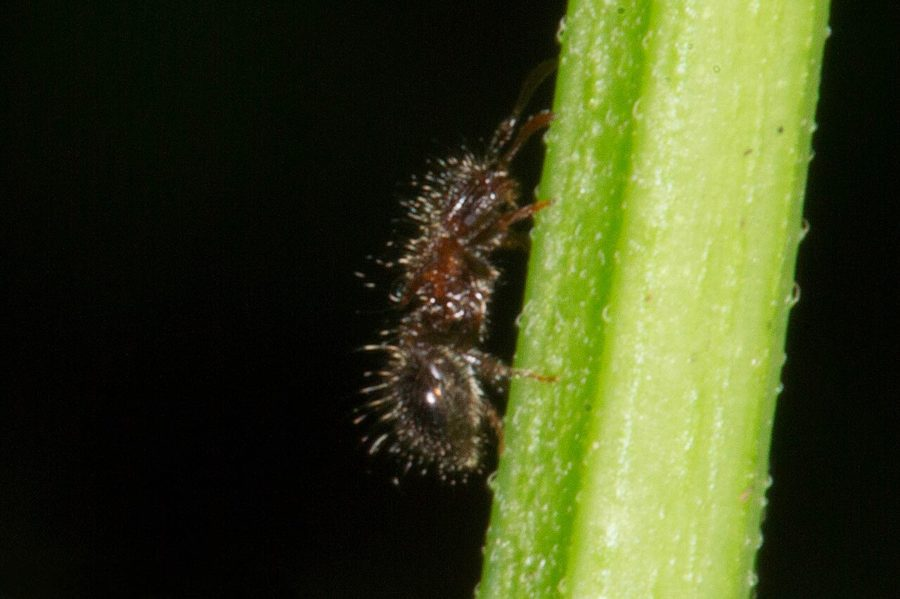

बाइकरलर्ड शील्ड ऐंटBicoloured Shield Ant
Meranoplus bicolor · Formicidae · INS-0254

- Scientific name वैज्ञानिक नाम
- Meranoplus bicolor (Guérin-Méneville, 1844)
- Family कुल
- Formicidae
- Hindi हिंदी
- बाइकरलर्ड शील्ड ऐंट
- Local names स्थानीय नाम
- bicoloured shield ant, do-rangi dhal cheenti, meranoplus bicolor, hairy shield ant
- Status here यहाँ की स्थिति
- native
- Movement आवागमन
- Resident, here all year
- Known from कहाँ दर्ज
- Others have published records from the wider Awadh–Purvanchal plain, none yet from Basti–Ayodhya अवध–पूर्वांचल से दूसरों के प्रकाशित अभिलेख, बस्ती–अयोध्या से अभी नहीं
- IUCN IUCN
- not evaluated
- Review समीक्षा
- not yet reviewed
When to look कब देखें
Expected mainly in March, April, May, June, July, August, September, October, November. मुख्यतः मार्च, अप्रैल, मई, जून, जुलाई, अगस्त, सितंबर, अक्टूबर, नवंबर में अपेक्षित।
बाइकरलर्ड शील्ड ऐंट / Bicoloured Shield Ant
Meranoplus bicolor (Guérin-Méneville, 1844) — Formicidae
बाइकरलर्ड शील्ड ऐंट — खुले रास्तों और घास के मैदानों में धीमी चाल से चलने वाली एक रोएंदार दो-रंगी चींटी। इसका सिर और सीना चमकीला नारंगी-लाल होता है, जबकि इसका दिल के आकार का पेट गहरा काला होता है। इसके सीने पर कांटों वाली एक सुरक्षात्मक ढाल बनी होती है। खतरा महसूस होते ही यह हाथ-पैर समेटकर मरे होने का नाटक (थैनाटोसिस) करती है।
Quick Identification त्वरित पहचान
| Feature | Description |
|---|---|
| Habit | Slow-moving, heavily armored bicoloured ground ant harvesting grass seeds |
| Coloration | Head and alitrunk bright yellowish-red to ferruginous; gaster jet-black |
| Shield Thorax | Promesonotum fused into a broad shield bearing sharp lateral spines |
| Pilosity | Body densely draped in long, soft, erect silky golden hairs |
| Death Feigning | Tuck legs and antennae tightly beneath shield when touched, feigning death |
Field tip: Look along dry grassy paths for slow-moving bicoloured ants; gently touch one to see it immediately curl into an unmoving little ball resembling a dry seed.
हिंदी — कैसे पहचानें: लाल-नारंगी सीना, काला गोल पेट, सीने पर कांटेदार ढाल, और छूते ही पैर सिकोड़कर मरे होने का ढोंग करना।
Morphology आकारिकी
Adult description: Small, stout, and uniquely armored myrmicine ant. Head roughly square, longitudinally rugose; scrobes deep, capable of receiving the entire folded antenna; clypeus narrow, smooth; mandibles armed with four sharp teeth. Promesonotum fused into a remarkable flattened quadrate shield or carapace, with anterior angles rounded and posterior corners drawn out into prominent acute spines. Propodeum armed with two long, divergent, slender spines. Petiole and postpetiole forming two distinct nodes; gaster heart-shaped, cordate, smooth and shining. Entire body clothed with long, soft, erect yellowish-white pilosity. Head, thorax, and petiole bright ferruginous-red; gaster contrasting jet-black.
हिंदी: यह एक छोटी कांटेदार चींटी है जिसका सीना लाल और पेट काला होता है।
Behaviour & Ecology व्यवहार और पारिस्थितिकी
- Thanatosis Defence: When poked or disturbed by a predator, the worker immediately folds its antennae and legs beneath the thoracic shield and lies completely motionless.
- Slow Foraging Movement: Forages with a deliberate, slow-paced walk over ground and low grass stems, never running frantically.
- Crater Nesting: Excavates vertical subterranean burrows surrounded by a distinctive circular crater of fine ejected sand pellets.
- Seed Harvesting: Collects fallen grass seeds, carrying them back to subterranean granary chambers for consumption.
हिंदी: यह चींटी खतरे के समय अपने अंग ढाल के नीचे समेटकर पत्थर की तरह शांत हो जाती है। यह जमीन में सुंदर गोल गड्ढा बनाकर रहती है।
Life Cycle / Phenology जीवन चक्र
- Nuptial Flights: Winged males and virgin queens take flight in warm humid afternoons following the first heavy monsoon rains in June.
- Subterranean Founding: Mated queen excavates a small chamber in sandy soil, sheds her wings, and rears the first batch of workers alone.
- Colony Maturation: Established colonies maintain several hundred workers and store seeds through dry pre-monsoon months.
- Seasonal Activity: Maximum foraging activity occurs during warm morning and late afternoon hours, avoiding scorching midday surface heat.
हिंदी: पहली मानसूनी बारिश के बाद पंखों वाली रानियां उड़ती हैं। रानी जमीन में नया बिल बनाकर नई कॉलोनी शुरू करती है।
Host Plants or Prey आहार
- Granivorous Diet: Fallen seeds of wild grasses (Cynodon, Eragrostis), amaranths, and wayside weeds.
- Animal Scavenging: Feeds opportunistically on dead grasshoppers, beetles, and small caterpillar remains.
- Nectar Resources: Licks extrafloral nectaries of field weeds like dhaincha and roadside shrubs.
हिंदी: यह मुख्य रूप से घास के बीजों को इकट्ठा करके खाती है। यह मरे हुए छोटे कीड़ों और फूलों के मीठे रस को भी लेती है।
Predators / Natural Enemies शत्रु
- Avian Predators: Pipits, larks, and common mynas foraging in open grasslands.
- Lizards: Ground-dwelling Indian garden lizards snap up foraging workers along footpaths.
- Invertebrates: Ant-mimicking jumping spiders and assassin bugs prey upon solitary foragers.
हिंदी: मैना, लवा और गिरगिट इन्हें खुले मैदानों में खाते हैं। शिकारी कीड़े इनका रास्ता रोककर शिकार करते हैं।
Agricultural / Human Relevance कृषि प्रासंगिकता
- Weed Seed Dispersal and Predation: Consumes vast quantities of agricultural weed seeds, reducing weed pressure along crop margins.
- Harmless Inhabitant: Never enters homes or pantries; strictly an outdoor, peaceful grassland species.
- Non-Biting Demeanour: Its small sting is incapable of penetrating human skin; relies entirely on passive armor and death-feigning.
हिंदी: यह खरपतवारों के बीजों को खाकर खेतों में उनकी संख्या नियंत्रित रखती है। यह घरों में नहीं आती और इंसानों को बिल्कुल नहीं काटती।
Expected Locally स्थानीय रूप से अपेक्षित
Not a field record. Written from published accounts for eastern Uttar Pradesh. No confirmed local sighting yet — if you have seen it, that is what the atlas needs.
अभी तक स्थानीय पुष्टि नहीं। यह विवरण प्रकाशित स्रोतों से है, किसी अवलोकन से नहीं।
Expected across rural settlements, agricultural groves, gardens, and scrublands of Basti, Ayodhya, and neighbouring Awadh districts. GBIF holds published records from the wider Awadh–Purvanchal plain, none yet from Basti–Ayodhya. To confirm this species for the Atlas, provide a clear photograph showing key field characters, along with date, time, and specific location.
Distribution वितरण
Global range: Widespread across the Indo-Malayan region, occurring from India and Sri Lanka eastwards to Southeast Asia and southern China.
In India: Common across peninsular India, the central highlands, and the northern Gangetic plains.
In Uttar Pradesh: Recorded across open pastures and farmland borders from Varanasi, Allahabad, and Lucknow.
In Basti district / eastern UP: Expected along dry grass borders of the Ghaghara floodplains, village cart paths, and fallow fields throughout Basti.
हिंदी: यह चींटी पूरे भारत और दक्षिण-पूर्व एशिया में पाई जाती है। उत्तर प्रदेश के सूखे घास के मैदानों और रास्तों पर यह आम है।
Research Questions शोध प्रश्न
- Which grass weed seeds form the primary stored granary biomass of Meranoplus bicolor in Basti? / बस्ती के खेतों में यह चींटी मुख्य रूप से किन घास खरपतवारों के बीज जमा करती है?
- How long does a worker remain in death-feigning thanatosis after being disturbed by different predators? / अलग-अलग शिकारियों से बचने के लिए यह चींटी कितने समय तक मरे होने का नाटक करती है?
- What depth do its subterranean seed chambers reach to avoid high summer soil temperatures? / गर्मियों में तेज धूप से बीजों को बचाने के लिए इसके भूमिगत भंडार कितनी गहराई पर होते हैं?
- How does soil texture influence the architecture and stability of its crater-shaped nest entrances? / मिट्टी का प्रकार इसके बिल के चारों ओर बने गोल गड्ढे की मजबूती को कैसे प्रभावित करता है?
- Does seed harvesting by Meranoplus bicolor measurably reduce weed germination in adjacent pulse fields? / क्या इस चींटी द्वारा बीज खाने से दलहन के खेतों में खरपतवार का जमाव कम होता है?
Similar Species मिलती-जुलती प्रजातियाँ
| Species | How to tell apart | हिंदी |
|---|---|---|
| Meranoplus bellii | Entire body uniformly dark reddish-brown; lacks the sharp two-tone contrast | पूरा शरीर एकसमान गहरा लाल-भूरा, दो-रंगा अंतर नहीं |
| Crematogaster rogenhoferi | Heart-shaped gaster reflexed upward over thorax when alarmed; nests in tree cartons | पेट को ऊपर उठाकर चलना, पेड़ों पर कागज जैसा छत्ता |
| Tetramorium bicarinatum | Slender body without a fused thoracic shield; walks rapidly without feigning death | बिना ढाल वाला पतला शरीर, तेज चलना, नाटक न करना |
Field rule: A slow-moving bicoloured ant with a bright orange-red spiny shield thorax and jet-black heart-shaped gaster that feigns death when touched identifies Meranoplus bicolor.
Taxonomy & Classification वर्गीकरण
Original description. Described by Félix Édouard Guérin-Méneville in 1844 as Meranoplus bicolor (originally placed in the genus Cryptocerus) in Iconographie du Règne Animal de G. Cuvier: Insectes, J.B. Baillière, Paris.
Subspecies. Monotypic across northern India; placed in the subfamily Myrmicinae.
Family and order placement. Belongs to the family Formicidae, subfamily Myrmicinae (shield ants), in the order Hymenoptera.
IUCN status rationale. Not evaluated by the IUCN; abundant, secure, and resilient across open grassland and rural habitats.
हिंदी: गुएरिन-मेनेविले ने 1844 में इसका वैज्ञानिक विवरण दिया था। यह फॉर्मिसिडी कुल के मर्मिसिनाई उपकुल की ढाल वाली चींटी है।
Photo Gallery फोटो गैलरी
No photos yet — add field photos to media/species/bicoloured_shield_ant/ and run node scripts/sync_photos.js.
Photos needed आवश्यक फोटो
- [ ] Worker carrying a dry grass seed across bare soil (घास का बीज ले जाती श्रमिक चींटी)
- [ ] Individual curled in thanatosis feigning death (मरे होने का नाटक करती चींटी)
- [ ] Sand crater entrance of subterranean nest (जमीन के बिल के मुहाने पर बना रेत का गड्ढा)
References संदर्भ
- Guérin-Méneville, F.E. (1844). Iconographie du Règne Animal de G. Cuvier: Insectes, J.B. Baillière, Paris.
- Bingham, C.T. (1903). The Fauna of British India, including Ceylon and Burma: Hymenoptera, Vol. II. Ants and Cuckoo-wasps, p. 168. Taylor and Francis, London.
- Bolton, B. (1995). A New General Catalogue of the Ants of the World. Harvard University Press, Cambridge.
- Schödl, S. (1998). Taxonomic revision of Oriental Meranoplus F. Smith, 1853 (Insecta: Hymenoptera: Formicidae: Myrmicinae). Annalen des Naturhistorischen Museums in Wien, 100B, pp. 361–394.
- Hölldobler, B. & Wilson, E.O. (1990). The Ants. Belknap Press of Harvard University Press, Cambridge.
- GBIF Occurrence Data — Meranoplus bicolor (Guérin-Méneville, 1844), India (2025).
Source file: species/fauna/insects/bicoloured_shield_ant.md